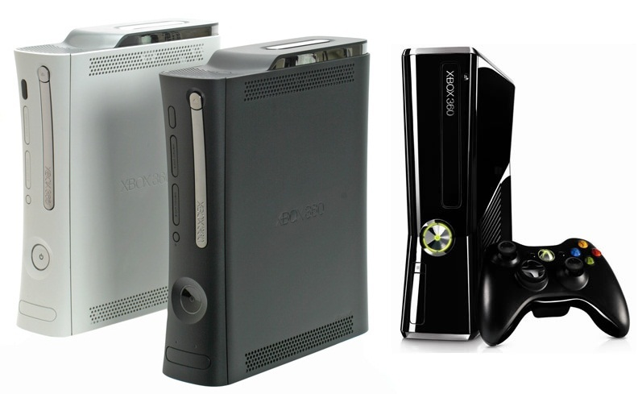

|
Xbox 360  Xbox 360 es la segunda videoconsola de sobremesa producida por Microsoft. Fue desarrollada en colaboración con IBM y ATI y lanzada en América del Norte, Japón, Europa y Australia entre 2005 y 2006. Sus juegos mas destacados fueron Gears of War y Halo.
Play Station 3 PlayStation 3 (conocida también como PS3) es la tercera videoconsola de sobremesa fabricada por Sony Computer Entertainment y la sucesora de la PlayStation 2 como parte de la marca PlayStation.
Wii Wii es una videoconsola producida por Nintendo y estrenada el 19 de noviembre de 2006 en Norteamérica y el 8 de diciembre del mismo año en Europa.
|